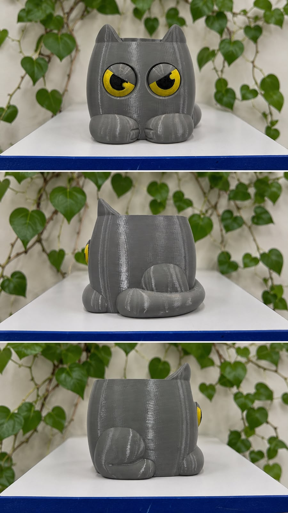

Ele fica de olho
Quando a água diminui, a expressão fica mais brava e chama sua atenção.
Um porta-planta em formato de gato que muda a expressão dos olhos conforme o nível da água.

01 / O mecanismo
Um sistema de boia movimenta os olhos do gato de acordo com o nível de água. Basta olhar para saber quando é hora de completar.
Quando a água diminui, a expressão fica mais brava e chama sua atenção.
Adicione água ao reservatório do porta-planta sempre que necessário.
Com o nível adequado, os olhos se abrem e o gato ganha uma expressão feliz.
02 / Feito para encantar
Mais que um vaso, uma presença divertida para sua mesa, estante ou cantinho verde.
A expressão mostra visualmente quando a água está baixa.
O movimento acontece por um mecanismo simples de boia.
Textura de impressão 3D e olhos amarelos cheios de expressão.
03 / Todos os ângulos
Leve o seu
Um porta-planta que ajuda no cuidado e ainda transforma qualquer ambiente com bom humor.
04 / Tire suas dúvidas
Um sistema de boia acompanha o nível da água e movimenta os olhos mecanicamente, sem depender de eletrônica.
Não. O indicador funciona pelo movimento do próprio sistema de boia.
Escolha a quantidade e clique em “Comprar pelo WhatsApp”. Sua mensagem de pedido será preenchida automaticamente.